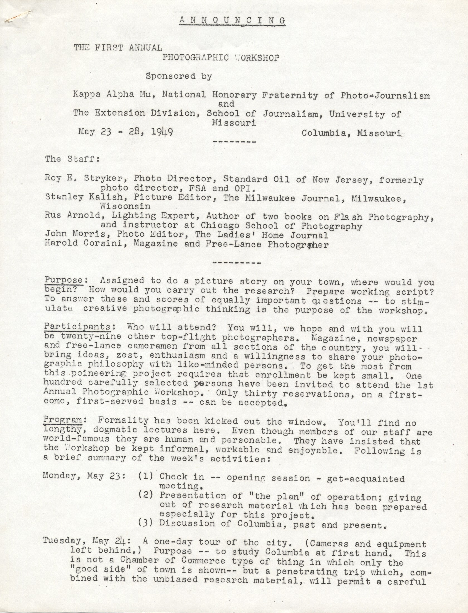
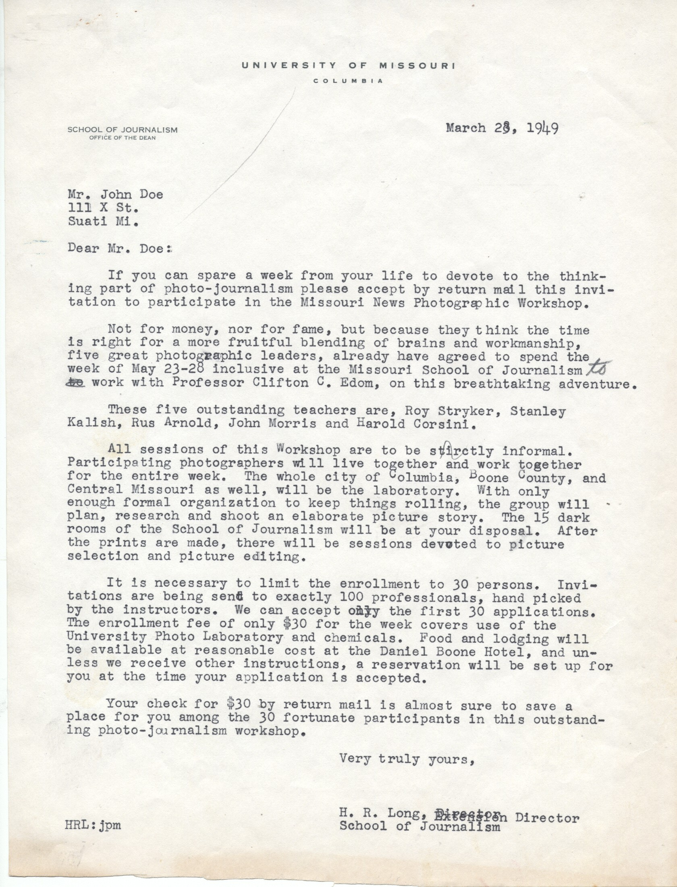
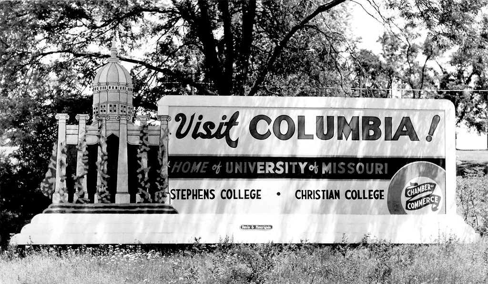

Photography has an evocative power to explain stories to others in a way that can be understood by all ages and literary levels. Even everyday scenes can take a deeper meaning when photographed.
“It distills the reality into something that’s more palpable and which sometimes feels very confronting. And, we can’t dismiss it. We can’t just turn our eyes. We look at it and sometimes we see for the first time what’s really going on […] that’s the real strength of still photography,” said David Rees, a Missouri Photo Workshop Co-Director and head of the MU Photojournalism Sequence.
David Rees, a Missouri Photo Workshop Co-Director and head of the MU Photojournalism Sequence.
Rich visual documentation can be found in the heart of Columbia that dates back as far as the founding of the photojournalism program at MU.
In 1943, Frank Luther Mott, dean of the School of Journalism at MU, recruited Clifton “Cliff” Edom to head the new photojournalism sequence.
Edom, often credited as the “Father of Photojournalism,” worked from 1943 until 1972 with the school to establish the sequence.
In 1944 and 1945 Cliff and his wife Vilia, "Vi", Edom established News Pictures of the Year Competition and Exhibition, now Pictures of the Year International (POYi), and the College Photographer of the Year (CPOY) competition respectively.
Listen to what David Rees had to say about the Missouri Photo Workshop.
Then, in 1949 inspired by the work done by the pre-WWII Farm Security Administration, Edom worked closely with FSA director Roy Stryker and photographer Russell Lee to create the original Missouri News Photographic Workshop.
The announcement of the first photographic workshop.
“I think that Cliff Edom was a very smart fellow in that he realized that in order to really advance his ideas of photojournalism and to get our students involved in the greater world it was important to somehow connect with the working professionals,” said Rees.
“Cliff had the idea that […] since we were land locked, you know we’re sort of here in the middle of Missouri, a good way to get professionals to come here would be to invite them to participate in contests or workshops at Missouri,” said Rees.
The 100 invited to participate were asked, “If you can spare a week from your life to devote to the thinking part of photojournalism [,] please accept by return mail this invitation to participate in the Missouri News Photographic Workshop.”
The invitation sent to the 100 professionals. Click the image to enlarge.
After assembling 23 professional and amateur photographers from ten states and Canada, Edom and his staff of editors gave only one assignment, to photograph the city of Columbia as it appeared to their eyes.
“The town sort of became a laboratory for the photographers to work in. So, that they would not only work on trying to make better pictures, but they would also create some images that had substance. It was like holding up a mirror to the community,” said Rees.
But, how has Columbia changed in the past 66 years since the first workshop?
{kind=link}
The Columbia welcome sign in 1949.
Click here to view selected photos from a recent project that photographed the modern day versions of scenes shot during MPW 1. On the left appears a photo taken during MPW 1 and on the right is the 2014 version of the scene.